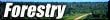
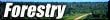

Objectives
Lesson Info
Activities
Materials
Advance Preparation
Background Info
Notes
Resources
Related Links
Activity #1
Activity #2
- to demonstrate that trees grow from their buds after a period
of dormancy
- to observe growth form of branches and roots of different
trees and identify the advantages of different growth forms
- to interpret graphs of the growth rates of trees.
| Grade Level | 11 | |
| Subject | Biology 20 | |
| Curriculum Correlation | Agricultural Botany of Saskatchewan | |
| CEL's | Independent Learning, Numeracy, Communication. | |
| Duration | up to 2 weeks | |
| Group Size | class of students working independently or in small groups | |
| Setting | outdoor and indoor | |
| Vocabulary | terminal buds, lateral buds, terminal bud scar, cambium, crown, dominant crown, suppressed trees, shade-tolerant, conical. |
Paper, pencils, drawing and model building materials, copies of the background information on Biosphere II.
1. In the spring, before buds have flushed, collect twigs as part of a field trip activity. Cuttings can be kept frozen in plastic bags until needed, then slowly thawed. Stress that permission should be asked before cutting twigs from trees or shrubs on private or public property. Cut twigs with a sharp knife blade or snipping shears. Remove twigs that won't noticeably affect the general appearance of the tree, and don't take all the twigs from the same spot or side.
2. Make copies Activity #1 (experiment sheet) and Activity # 3 as required.
How does a small, hard seed become a 30 m tall tree? In the competitive
world of the forest, the vast majority of seeds do not in fact
ever produce mature trees. Only a few that land on suitable ground,
get enough exposure to sunlight and water, and are not eaten or
damaged by animals and diseases eventually grow up to become adult
trees in the forest.
Look at the trees on your local streets and in parks. Every tree has a different size and shape, depending on the rate and pattern in which new cells are added to it each year. You can think of tree growth in two ways. First, the trunks grow outwards and upwards from their tips, carrying their leaves towards the sun. This growth produces extra height and spread. Second, the trunk and branches grow thicker and sturdier, allowing them to support the added weight of the larger branches.
Despite their variations in appearance, all trees have essentially
the same basic structure. They have a central column - the trunk
- supporting a framework of branches. The branches in turn bear
an outside covering layer of leaves. Anchoring the tree in the
ground is a network of roots, which spreads and grows thicker
in proportion to the growth of the tree above the ground. In a
mature tree, most of the cells of the trunk, roots, and branches
are dead or inactive. All growth of new tissue takes place at
only a few points on the tree, by the division of specialized
cells. These actively growing areas are located at the tips of
branches and roots and in a thin layer just inside the bark.
If you look at a branch on a deciduous tree during the winter
when the leaves are gone, you can see terminal buds at
the very ends of the twigs. These are the points from which the
next spring's growth will take place. Twigs also have side or
lateral buds, from which side branches develop. Buds are
formed in the summer and fall and remain dormant over winter.
Dormancy is broken when suitable growing conditions return, usually
in the spring.
If you look further back along a twig, you will come to a ring
of thickened bark. This scar tissue marks the place where the
terminal bud grew the previous year and is called the terminal
bud scar. The distance between the scar and the new terminal
bud is therefore the amount of growth that took place in one year.
Knowing this, you can find the age of several branches of different
sizes on your tree.
As the main trunk of the tree grows taller, it also grows thicker.
Its structure can be thought of as an extremely elongated cone
shape, with the base of the trunk, being the oldest part, slightly
thicker than the rest of the trunk. You can visualize this growth
pattern by inverting and stacking a number of paper cups on one
another. Each cup column represents a year's growth. The narrow
bottom of each cup (pointing upwards in the column) represents
the terminal bud. Each year's growth fits tightly around the previous
year's and increases the height of the tree. While the growth
in height comes from the terminal buds, the growth in girth comes
from a thin layer of cells called the cambium, found between
the inner bark and the wood of the trunk and branches. In the
paper cup model, the cambium is represented by the outside surface
of the cups.
The growth rate and the ultimate height and shape of a tree are
governed partly by the growing conditions of its environment,
but also by its genes. In optimal conditions of sunlight and moisture,
different species reach different maximum heights. The tallest
species of trees are the coastal redwoods, which grow on the west
coast of California and Oregon and reach heights up to 112 m.
A tree can continue to grow for as long as it lives, so its ultimate
height depends on its growth rate and its longevity. Height can
however be adversely affected by environmental factors such as
long periods of cold summers and insect attacks.
The shape of a tree depends on many factors, such as the amount
of space it has to grow in, the amount of sunshine and moisture
it receives, the relative growth rate of its terminal and lateral
branches, and any damage it receives from such factors as lightning,
fires, prevailing winds, snow, animals, and disease. The part
of the tree above the trunk, called the crown, is built
up bit by bit and year by year in order to maximize the leaves'
exposure to the sun's energy. The direction of growth of the branches
is towards the light. Trees that can reach above their neighbours
get the most sunshine and are said to have dominant crowns.
Those that are shaded by other trees may be slower growing
and are called suppressed trees. In some species, such
as poplar, continued shading over several years will eventually
lead to their death. Other species, however, called shade tolerant,
can survive long periods in low levels of light. Species such
as white spruce establish themselves under a canopy and eventually
become dominant as pioneer species die off.
While a great height and large crown give a tree more exposure
to sunlight, they make the branches more vulnerable to damage
from severe winds or heavy snow. To balance the spread of its
branches, a tree tends to grow deeper roots to anchor it firmly
against toppling by storms. Jack pines have large deep tap roots
which enable them to root themselves well in shallow sandy soils
and access water. Spruce trees have a shallow root network which
leaves the trees susceptible to wind blow when the tree is exposed.
Such exposure may come from removal of adjacent trees during logging
operations or when a road is being built or, naturally when a
fire leaves a strip of trees along a lake as it goes through an
area.
In general, the crowns of trees growing in Saskatchewan take on
two basic forms: conical and round. In conical forms -
such as the familiar spruce tree - the terminal bud grows much
faster than the lateral branches. The resulting conical form helps
the tree shed snow and ice, and its compact shape resists wind
pressure. For this reason, the conical form is most common in
trees growing farther north. In the milder climatic areas associated
with mixed wood forest and southern parkland, the predominant
form is that of the spreading, more rounded crown, typical of
aspens and elms.
Besides its branches, roots, and leaves, a mature tree grows one
other important structure -- the flower (or cone, in the case
of evergreens). These are the reproductive structures from which
the seeds are produced. Fast-growing species may mature and produce
seeds after as little as five to 10 years' growth, while other
species take 30 to 40 years to mature. A certain size is needed
before flowering takes place, and suppressed trees may not flower
even at an age of 50 to 100 years or more. With the growth of
flowers, fruit, and seeds, the life cycle of the tree comes full
circle. The seeds are dispersed by wind, water, or animals, and
the few that find a suitable spot will germinate and begin their
journeys of growth toward the sun.
1. The purpose of the Activity # 1 is to observe and measure twig
growth and to observe the effects of a sucrose solution on the
buds. The experiment demonstrates not only how new growth occurs
from buds, but also the phenomenon of dormancy. This is a spring
activity, as twigs require a cold period before dormancy can be
broken.
2. Activity #2 and the two graphing exercises for Activity #3 are intended to help students appreciate some of the factors that affect the growth of trees.
l. How a Tree Grows, a poster available from the Saskatchewan Forestry Association.
- Saskatchewan Education Evergreen Curriculum
- Canadian Forests